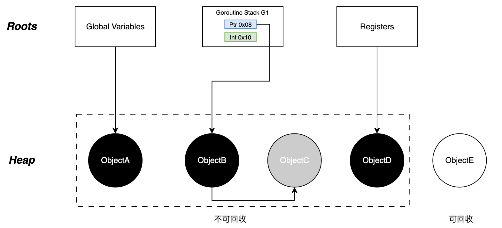

📄 本文共 1920 字，预计阅读 5 分钟
07. GC--三色标记法
1. 概述
Go runtime 的 GC 设计目标偏向低延迟与可预测停顿。整体采用非分代、并发的标记-清扫框架，以三色标记法作为可达性分析核心，并通过写屏障与mutator assists在并发修改对象图的情况下维持标记正确性。根对象（栈、全局与运行时根等）定义了标记起点，三色推进过程则完成从根到堆的可达性闭包，最终清理不可达对象。
2. 根集合
GC 的本质是可达性分析 。算法必须从一组被视为“绝对活跃”的对象出发，递归扫描整个对象图。所有可达对象都应被判定为存活，不可达对象则在清扫阶段回收。这组起始对象即根集合 (Root Set) 。内存拓扑示意如图1所示。  图1：内存拓扑示意
{kind=link}
该图展示了 GC 视角的内存分层结构 ：
-
Roots 层（上层）：包含全局变量、goroutine 栈（G1）、寄存器 。
-
Heap 层（下层）：包含动态分配的对象 A、B、C、D、E 。
引用关系： - Roots 直接指向 ObjectA、ObjectB、ObjectD，根扫描会把根直接可达对象“标记并加入工作队列”，它们在逻辑上进入灰色集合，当该对象被 worker 取出并扫描其字段完成后转为黑色。 - ObjectB 引用了 ObjectC，通过传递引用维持了 C 的存活 。 - ObjectE 没有任何引用指向它（不可达），属于可回收区域 。
Roots层各元素的详细说明如下：
- 全局变量 (Global Variables)
- 物理位置：编译期确定的数据段 (
.data) 和未初始化数据段 (.bss) 。 - 生命周期：与 go 进程生命周期一致，常驻内存 。它们指向的堆对象（如图中的 ObjectA）是静态根可达，绝不会被回收 。
- 物理位置：编译期确定的数据段 (
- 栈帧 (Goroutine Stack)
- 动态性：每个goroutine 都有独立的栈。所有处于
_Grunning、_Grunnable等活跃状态的 G，其栈上的指针变量均为 Root 。 - 精确式扫描：go 编译器会在函数调用处插入stackmap。GC 利用 stackmap 准确区分栈上的数据是指针还是标量（例如，能够区分
0x08处的指针和0x10处的整数）。这有效避免了将整数误判为指针而导致的内存泄漏。
- 动态性：每个goroutine 都有独立的栈。所有处于
- 寄存器 (Registers)
- 现场保护：寄存器代表了硬件执行的“现场” 。为了极致性能，编译器会将高频使用的指针暂存在寄存器中，而非写回内存。因此，GC 必须扫描当前 P 绑定的 M (系统线程) 中的寄存器，否则会导致活跃对象丢失 。
3. 三色标记抽象
三色标记法本质上是 Dijkstra 提出的并发图遍历算法 。它通过三种颜色状态来描述对象在波前中的位置 。具体标记和推进的过程如图2所示。
 图2: 三色标记和推进
图2: 三色标记和推进
3.1 状态定义
-
白色—— 潜在垃圾
-
定义：尚未被 GC 扫描到的对象，或扫描结束后确定不可达的对象 。
-
流转：GC 开始时全白；GC 结束时，剩余的白色对象即为垃圾 。
-
-
灰色—— 扫描波前
-
定义：自身已被标记为活跃，但其引用的子对象尚未被全部扫描 。
-
作用：灰色集合构成了推进的波前，将黑色（已知存活）与白色（未知区域）分隔开 。
-
-
黑色—— 安全存活
-
定义：自身已被标记，且其所有子对象都已被扫描（或已加入灰色队列） 。
-
特性：GC 认为黑色对象是绝对安全的，不会再回头扫描它 。
-
3.2 标记流转过程 (BFS)
整个标记过程是一个标准的广度优先搜索： 1. Init（全白）：初始状态，所有堆对象（A-E）均为白色 。
-
Scan Roots（根扫描 -> 灰）：
-
GC 遍历 Root Set（栈、全局变量等），找到根直接指向的对象
A。 -
将
A的gcmarkBits置为 1，并将A的指针加入gcWork队列，此时A逻辑上转为灰色。
-
-
Process Grey（波前推进 -> 黑）：
-
出队（变黑）：Worker 从
gcWork队列中取出对象A。此时A依然被标记（Bit=1）但已离开队列，逻辑上瞬间转为 黑色 。 -
扫描子对象（变灰）：扫描
X的内存块，找到其引用的子对象Child。 -
若
Child为白色（gcmarkBits=0），则将其置为 1 并加入队列（Child变灰）。 - Finish：重复步骤3，直至灰色队列清空。
-
4. 位图和工作队列
在 Runtime 的物理实现中，并没有在对象头中存储“颜色”字段，而是采用了位图与队列结合的方式来表达三色状态。
除了推进的过程外，我们还需要更深入的去了解，再runtime中到底是如何针对黑、白、灰进行扫描和标记的，具体过程如图3所示。
 图3: 三色状态的物理定义
图3: 三色状态的物理定义
该图通过“逻辑抽象”与“物理运行视图”的对比，揭示了 Go Runtime 的底层真相 ：
- 位图 (Bitmap)：右侧展示了
gcmarkBits，其中 Object A 和 Object B 的对应位均为1(marked)，Object C 为0。 -
工作队列 (Work Queue)：底部的队列中存储了指向 Object B 的指针
ptr_b。 -
状态公式：
- 黑色 (Black) = MarkBit(1) + 不在队列中 。
- 灰色 (Grey) = MarkBit(1) + 在队列中 。
- 白色 (White) = MarkBit(0) 。
4.1 标记位图
Go 并未在对象头 (Object Header) 中存储“颜色”字段，以避免破坏内存对齐并降低开销 。
- 物理存储：利用
mheap.arenas中每个heapArena的gcmarkBits位图 。 -
状态映射：
- 黑色：
gcmarkBits对应位为 1 。 - 白色：
gcmarkBits对应位为 0 。 - 灰色：没有显式的位标记。灰色是一个复合的逻辑状态，指“
gcmarkBits为 1 且 该对象的指针存在于gcWork队列中” 。
- 黑色：
4.2 工作队列与负载均衡
这是 GC 与 GMP 调度模型 的结合点 。
- 本地化：为了减少全局锁竞争，Go 采用了去中心化设计。每个 P (Processor) 拥有两个本地缓冲区 (
wbuf1,wbuf2) 构成的gcWork。写屏障和 Root 扫描产生灰色对象优先存入本地 。 - 工作窃取：当某个 P 闲置（本地无灰色对象）时，它会尝试从其他 P 的
gcWork或全局队列中窃取标记任务 。这保证了并发标记阶段的 CPU 利用率最大化并减少长尾效应。
5. 并发下的对象丢失
在并发标记阶段，用户代码 (Mutator) 可能在 GC 扫描的同时修改引用关系，导致 “悬挂指针” 问题。
悬挂指针场景 ：
- GC 扫描了对象
A，将其涂黑（认为A已处理完毕）。 - Mutator 执行
A.ptr = C：让黑色的A指向白色的C。 - Mutator 执行
B.ptr = nil：切断了灰色B到C的原有引用。 - 结果：
C实际上被A引用，应该是活跃的。但由于A是黑色（GC 不会再扫描），且B不再指向C，C将永远保持白色，最终被错误回收。
这就是并发 GC 的核心矛盾：黑色对象引用白色对象 。为了解决这一问题，Go 引入了混合写屏障机制，这将在下一篇文档中详细阐述 。
6. 总结
- 根集合定义了标记的起点：全局变量、各 goroutine 栈、以及 safepoint 下的寄存器现场等共同构成Root Set。
- 三色标记用白/灰/黑表达并发遍历的“波前推进”：根可达对象先入灰，扫描完成后转黑，剩余白对象在清扫阶段回收。
- 物理实现中，“是否标记”由位图承载，而“灰/黑”是逻辑状态，通常由工作队列与扫描进度共同体现。